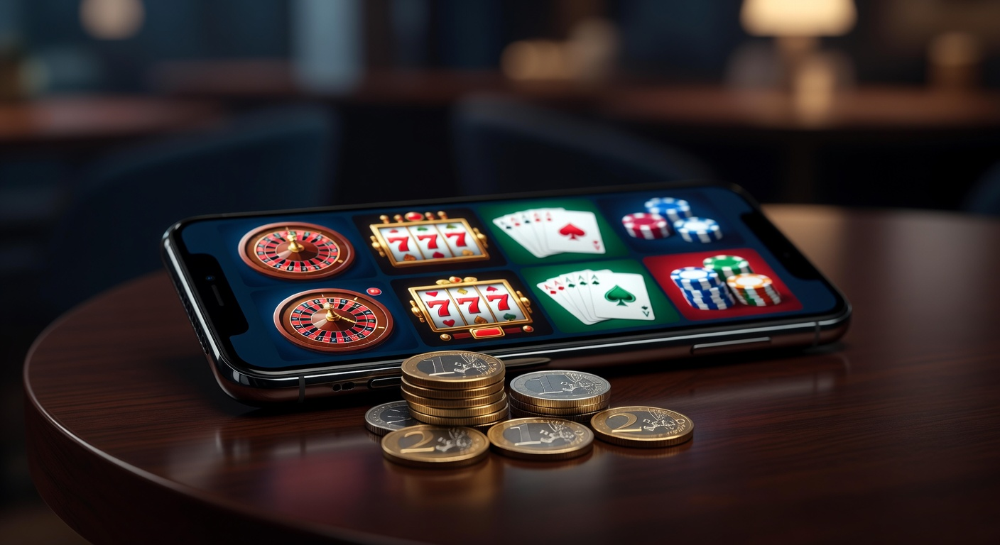
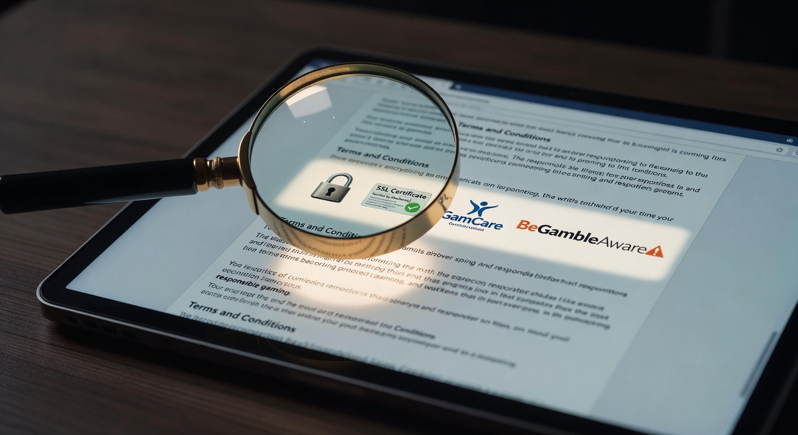
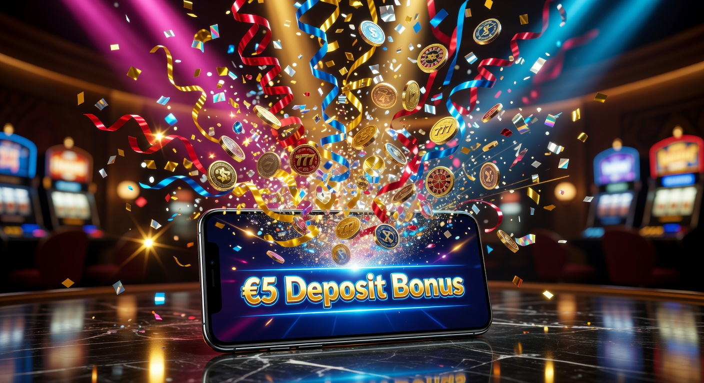
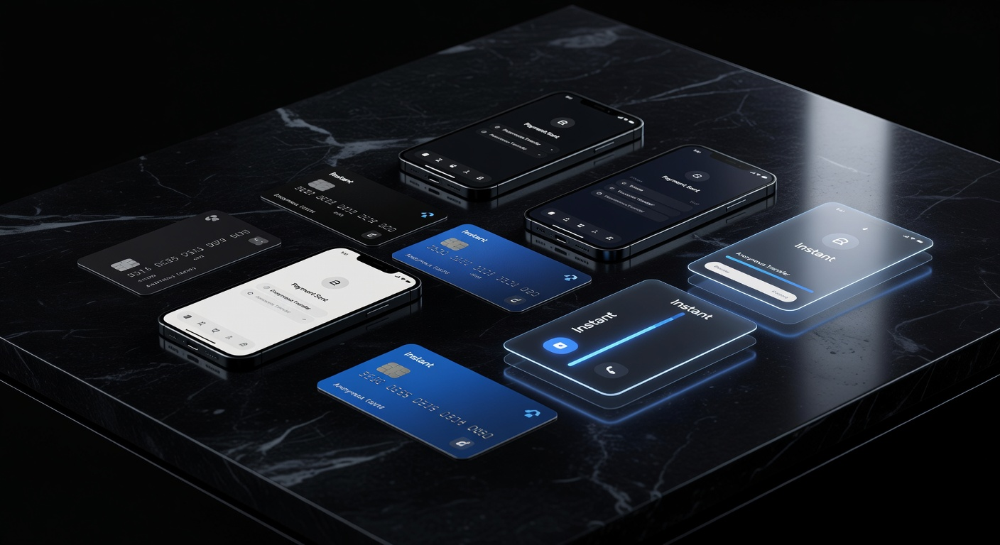
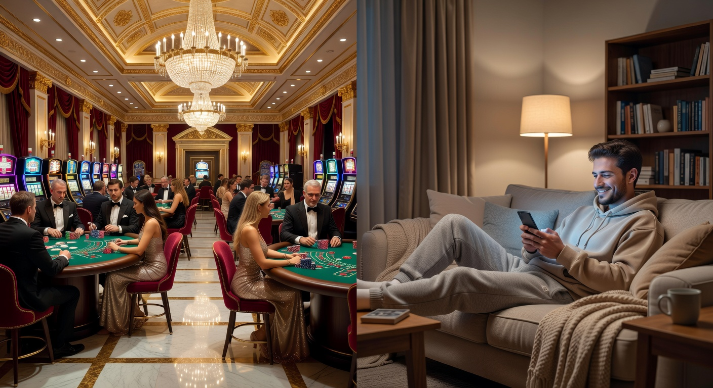

Casino con deposito minimo 5 euro senza documento: Guida ai Migliori Siti 2026
Il panorama del gioco d'azzardo digitale nel 2026 ha raggiunto vette di accessibilità e riservatezza mai viste prima. La domanda di piattaforme che permettano di iniziare l'esperienza ludica con un investimento contenuto e senza la lungaggine burocratica dell'invio dei documenti d'identità è esplosa. Un casino con deposito minimo 5 euro senza documento rappresenta oggi la soluzione ideale per chi desidera testare l'adrenalina delle slot machine o dei tavoli live senza esporsi finanziariamente o condividere dati sensibili nell'immediato. Questa guida esplora le dinamiche di questo mercato in continua evoluzione, analizzando i vantaggi tecnici e legali di tali portali.
Nel 2026, la tecnologia blockchain e i nuovi sistemi di verifica istantanea hanno reso obsoleto il vecchio modello di attesa. Molti utenti cercano un casino con deposito minimo 5 euro senza documento per la rapidità d'esecuzione: si deposita, si gioca e, in molti casi, si preleva attraverso protocolli crittografici che garantiscono l'anonimato. La sicurezza non viene meno, poiché queste piattaforme operano spesso sotto licenze internazionali rigorose che tutelano il giocatore attraverso algoritmi di gioco equo certificati da enti terzi.
Scegliere un casino con deposito minimo 5 euro senza documento significa anche abbracciare una filosofia di gioco responsabile basata sul micro-investimento. Con soli 5 euro, grazie ai bonus moltiplicatori e ai giri gratuiti, è possibile estendere la sessione di gioco per ore, esplorando cataloghi che superano i 5.000 titoli tra slot, crash games e roulette. In questo articolo, analizzeremo nel dettaglio i migliori brand del settore, i metodi di pagamento più veloci e come navigare in sicurezza tra le offerte del 2026.
Perché giocare nei casino con deposito minimo 5 euro senza documento?
L'attrattiva principale di un casino con deposito minimo 5 euro senza documento risiede nella barriera all'entrata praticamente inesistente. In un'epoca dove la privacy digitale è diventata un bene prezioso, poter accedere a servizi di intrattenimento di alto livello senza dover scansionare passaporti o carte d'identità è un plus non indifferente. Molti giocatori professionisti e amatoriali preferiscono mantenere un profilo basso, evitando che i propri dati personali finiscano in database centralizzati soggetti a potenziali violazioni.
Oltre alla privacy, il fattore economico gioca un ruolo cruciale. Un deposito di soli 5 euro permette di gestire il proprio bankroll con estrema prudenza. In un casino con deposito minimo 5 euro senza documento, non si è costretti a versare somme ingenti per sbloccare l'accesso alla piattaforma. Questo approccio è perfetto per chi vuole provare l'interfaccia utente, la velocità dei server e la qualità del supporto clienti prima di impegnarsi con cifre più importanti. È una sorta di "test drive" finanziario che protegge il portafoglio dell'utente.
Infine, la velocità è l'elemento che definisce il 2026. I processi KYC (Know Your Customer) tradizionali possono richiedere fino a 48-72 ore per la verifica. Optando per un casino con deposito minimo 5 euro senza documento, il tempo che intercorre tra la registrazione e la prima puntata è ridotto a pochi secondi. Questo dinamismo si sposa perfettamente con l'uso di dispositivi mobile, dove l'utente cerca un'esperienza "mordi e fuggi" durante le pause quotidiane, senza intoppi amministrativi.
Per approfondire le dinamiche della regolamentazione europea sui giochi, è possibile consultare le linee guida sulla regolamentazione del gioco d'azzardo online su Wikipedia, che spiegano come la trasparenza e la sicurezza siano fondamentali anche nei mercati internazionali.
Classifica dei migliori siti per giocare con soli 5€

Individuare il miglior casino con deposito minimo 5 euro senza documento richiede un'analisi attenta di diversi parametri: varietà dei giochi, velocità dei pagamenti e solidità della licenza. Nel 2026, alcuni brand si sono distinti per la capacità di offrire un'esperienza fluida e sicura, eliminando le frizioni burocratiche. Queste piattaforme sono state selezionate per la loro affidabilità e per la qualità dei software utilizzati, provenienti dai migliori provider mondiali come NetEnt, Evolution e Pragmatic Play.
La classifica che segue tiene conto del feedback degli utenti e dei test tecnici effettuati dai nostri esperti. Ogni casino con deposito minimo 5 euro senza documento elencato garantisce transazioni protette da crittografia SSL a 256 bit e un sistema di generazione di numeri casuali (RNG) regolarmente verificato. Non si tratta solo di risparmiare tempo, ma di giocare in ambienti controllati che rispettano gli standard internazionali di qualità del 2026.
Ecco una selezione dei portali più performanti dell'anno:
| Brand | Vantaggio Principale | Metodo Consigliato | Link Ufficiale |
|---|---|---|---|
| Millioner | Ampio catalogo slot 2026 | Criptovalute | Visita Millioner |
| Roulettino | Tavoli live esclusivi | E-wallet | Visita Roulettino |
| Wyns | Prelievi istantanei | Bitcoin | Visita Wyns |
| Kinbet | Scommesse + Casino | Revolut / Skrill | Visita Kinbet |
| Dragonia | Bonus 5€ senza deposito | Litecoin | Visita Dragonia |
Analisi dei top brand internazionali e non AAMS
I brand sopra menzionati operano spesso con licenze internazionali come quella di Curaçao eGaming o della UK Gambling Commission. Queste autorizzazioni permettono di offrire servizi a un pubblico globale, mantenendo standard di sicurezza elevati pur essendo classificati come siti "non AAMS" (o non ADM). In un casino con deposito minimo 5 euro senza documento di questo tipo, la flessibilità è la parola d'ordine. Millioner, ad esempio, è diventato un punto di riferimento nel 2026 per la sua interfaccia futuristica e la totale assenza di richieste documentali nelle fasi iniziali.
Un altro esempio di eccellenza è Roulettino, che si focalizza sull'esperienza dei tavoli dal vivo. Qui, il deposito minimo euro è ottimizzato per permettere anche a chi versa poco di sedersi a tavoli con puntate minime di soli 0,10€. Questo permette una longevità incredibile anche con un budget ridotto. Questi siti superano le restrizioni locali offrendo una libertà che molti utenti italiani cercano disperatamente per proteggere la propria privacy finanziaria.
Piattaforme come Wyns e Kinbet hanno invece puntato tutto sull'integrazione tra gaming e scommesse sportive. Entrare in un casino con deposito minimo 5 euro senza documento e poter spaziare tra una slot machine e una scommessa sulla Champions League del 2026 con lo stesso saldo è un valore aggiunto notevole. Infine, Dragonia si distingue per le sue promozioni ricorrenti che premiano la fedeltà anche dei piccoli depositanti.
Confronto tra piattaforme sicure e veloci
Nel valutare un casino con deposito minimo 5 euro senza documento, non bisogna guardare solo alla grafica. La velocità dei server e la stabilità della connessione sono fondamentali, specialmente per i giochi live. Nel 2026, i migliori portali utilizzano CDN (Content Delivery Networks) globali per azzerare il lag. Brand come Wildtokyo Casinò e Astromania Casinò sono noti per la loro infrastruttura tecnologica che permette sessioni di gioco fluide anche su connessioni 5G instabili.
La sicurezza è garantita da protocolli di verifica in background che non richiedono l'intervento dell'utente. Mentre i casinò tradizionali chiedono foto del documento e bollette, un moderno casino con deposito minimo 5 euro senza documento può utilizzare la verifica tramite wallet crittografici o sistemi di Open Banking. Questo assicura che il giocatore sia maggiorenne e che i fondi siano legittimi, senza violare la privacy individuale. Siti come Diva Spin Casinò e Lunubet Casinò eccellono in questo equilibrio tra conformità e libertà utente.
Come scegliere un portale affidabile per piccole ricariche

Scegliere il giusto casino con deposito minimo 5 euro senza documento non è una questione di fortuna, ma di ricerca metodica. Il primo passo è controllare la presenza di una licenza valida nel piè di pagina del sito. Anche se si cerca un sito senza documenti, la legalità dell'operatore è ciò che garantisce che vincerai e sarai pagato. Nel 2026, le licenze di Curaçao e Malta rimangono le più affidabili per i mercati internazionali, offrendo un giusto compromesso tra flessibilità e controllo.
Un altro fattore determinante è la reputazione online. Prima di depositare in un casino con deposito minimo 5 euro senza documento, è utile leggere le recensioni su forum specializzati o siti di comparazione. Cerca menzioni su Spinempire Casinò o Boomerangbet Casino per capire come gestiscono i prelievi. Se gli utenti segnalano ritardi o richieste improvvise di documenti al momento del payout, quel portale potrebbe non essere quello che stai cercando. La coerenza tra le promesse di marketing e l'esperienza reale è fondamentale.
Infine, testa il servizio clienti. Un casino con deposito minimo 5 euro senza documento di qualità offre una chat dal vivo attiva 24/7. Prova a fare una domanda tecnica prima di registrarti. Se ricevi una risposta rapida, pertinente e cordiale, è un ottimo segno della professionalità dell'operatore. Portali come VegasHero Casinò e Wonderluck Casinò investono pesantemente nel supporto multilingue, assicurando assistenza anche in italiano nel 2026.
Licenze internazionali e protezione dei dati
La protezione dei dati in un casino con deposito minimo 5 euro senza documento è paradossalmente superiore rispetto ai siti tradizionali. Non raccogliendo documenti sensibili, questi siti riducono drasticamente il rischio di furto d'identità in caso di attacchi hacker ai loro database. La licenza Curaçao eGaming, molto comune in questo settore, obbliga comunque gli operatori a seguire standard di crittografia rigorosi. Questo significa che i tuoi dati di navigazione e le tue transazioni rimangono protette da occhi indiscreti.
È importante sottolineare che la UK Gambling Commission e altre autorità europee stanno spingendo verso modelli di "affordability check" meno invasivi. In questo contesto, il casino con deposito minimo 5 euro senza documento si pone come un'alternativa di frontiera, dove la responsabilità è lasciata maggiormente all'utente finale. Tuttavia, la conformità alle normative anti-riciclaggio (AML) viene mantenuta monitorando i flussi di denaro sospetti, piuttosto che vessando il piccolo giocatore occasionale con richieste di selfie con il passaporto.
Per chi cerca la massima trasparenza, si consiglia di consultare i portali governativi o le pubblicazioni di settore come Forbes per comprendere l'evoluzione delle tecnologie FinTech applicate al gambling nel 2026. La convergenza tra finanza decentralizzata e intrattenimento online è ormai una realtà consolidata che favorisce l'utente finale.
La verità sulla verifica dell'identità (KYC)
Molti giocatori si chiedono: "È davvero possibile prelevare da un casino con deposito minimo 5 euro senza documento?". La risposta nel 2026 è: dipende dal metodo di pagamento. Se utilizzi metodi tradizionali come il bonifico bancario, la banca stessa richiederà verifiche. Se invece utilizzi criptovalute o sistemi come Trustly e Pay N Play, la verifica dell'identità avviene in modo silente e istantaneo attraverso l'istituto finanziario di origine. Questo permette al casinò di confermare la tua identità senza che tu debba inviare nulla.
Il concetto di KYC (Know Your Customer) sta evolvendo. Nei siti di gioco moderni, la verifica può essere richiesta solo se si superano determinate soglie di prelievo (ad esempio, oltre i 2.000€). Per chi gioca con piccoli budget in un casino con deposito minimo 5 euro senza documento, queste soglie raramente vengono raggiunte in un'unica sessione, permettendo di godere di un'esperienza totalmente anonima per anni. È una libertà che i casinò online tradizionali faticano a offrire a causa di regolamentazioni locali più rigide, come quelle dell'ADM (ex AAMS) in Italia.
Puoi trovare maggiori informazioni su come funziona la privacy nei casino senza documenti nella nostra sezione dedicata, dove approfondiamo gli aspetti tecnici dei protocolli di anonimato nel 2026.
Bonus e promozioni attive con versamento di 5€

Nonostante la cifra contenuta, un casino con deposito minimo 5 euro senza documento può offrire promozioni sorprendenti. Nel 2026, la competizione tra operatori ha portato alla creazione di bonus specifici per i piccoli depositanti. Non è raro trovare offerte del tipo "Versa 5€ e gioca con 20€", che danno un boost immediato al bankroll. Questi incentivi sono fondamentali per attirare nuovi utenti che sono scettici riguardo alle grandi ricariche.
I bonus nei metodi di ricarica da 5 euro sono spesso strutturati come crediti di gioco o pacchetti di giri gratuiti. In un casino con deposito minimo 5 euro senza documento, il valore aggiunto non è solo la cifra extra, ma la possibilità di provare giochi premium che normalmente richiederebbero puntate più alte. Bisogna però fare attenzione ai requisiti di scommessa (wagering). Leggere i termini e le condizioni è vitale per capire quante volte il bonus deve essere giocato prima di diventare prelevabile.
Le promozioni di benvenuto nel 2026 sono diventate più trasparenti. Molti siti offrono ora bonus "wager-free" o con requisiti molto bassi (es. 10x o 20x). In un casino con deposito minimo 5 euro senza documento, questo significa che trasformare una piccola ricarica in una vincita reale è molto più probabile rispetto al passato. La chiave è cercare portali che valorizzino ogni singolo euro depositato, trattando il micro-giocatore con lo stesso rispetto riservato ai VIP.
Bonus di benvenuto e giri gratuiti
Il bonus di benvenuto classico sta cambiando volto. In un casino con deposito minimo 5 euro senza documento, spesso il benvenuto consiste in una combinazione di match bonus e free spins. Ad esempio, depositando 5 euro, potresti ricevere il 100% di bonus (altri 5 euro) e 50 giri gratis su una slot popolare come "Book of Dead 2026". Questo tipo di pacchetto permette di esplorare la piattaforma in modo approfondito senza rischi eccessivi.
I giri gratuiti sono particolarmente apprezzati perché permettono di vincere denaro reale senza intaccare il saldo depositato. Molti casinò online offrono giri gratis anche solo per la registrazione, ma il casino con deposito minimo 5 euro senza documento solitamente ne offre un numero maggiore al primo deposito. È un modo eccellente per testare la volatilità delle nuove slot machine introdotte quest'anno sul mercato.
Programma VIP e cashback per piccoli depositi
Essere un "piccolo giocatore" non significa essere esclusi dai vantaggi dei programmi fedeltà. Nel 2026, i migliori casino con deposito minimo 5 euro senza documento hanno implementato sistemi di gamification dove ogni puntata, anche minima, fa accumulare punti. Questi punti possono essere convertiti in ulteriori bonus, gadget o persino ricariche gratuite. Il programma VIP è ora accessibile a tutti, non solo agli high roller.
Il cashback è un'altra funzione vitale. Immagina di giocare in un casino con deposito minimo 5 euro senza documento e perdere la tua ricarica. Grazie a un sistema di cashback settimanale del 10% o 20%, riceverai una parte di quei soldi indietro, pronti per essere rigiocati o prelevati. Questo paracadute finanziario rende l'esperienza di gioco molto più serena e sostenibile nel lungo periodo, incentivando la fedeltà alla piattaforma.
Metodi di pagamento per ricariche immediate e anonime

La scelta del metodo di pagamento è l'elemento che definisce l'esperienza in un casino con deposito minimo 5 euro senza documento. Per mantenere l'anonimato e la velocità, i sistemi tradizionali come le carte di credito stanno perdendo terreno a favore di soluzioni digitali più avanzate. Nel 2026, l'integrazione con i wallet digitali e le blockchain è diventata lo standard del settore per chi cerca discrezione e rapidità.
Un casino con deposito minimo 5 euro senza documento deve offrire opzioni che non lascino tracce identificative troppo evidenti o che, quantomeno, non richiedano l'inserimento di dati sensibili sul sito del casinò. I voucher prepagati come Paysafecard o Neosurf rimangono molto popolari per i piccoli depositi. Compri il codice in contanti o online, lo inserisci nel casinò e sei pronto a giocare: niente conti correnti collegati, niente documenti richiesti. È la massima espressione del gioco anonimo.
Tuttavia, il futuro appartiene ai sistemi che combinano sicurezza e velocità di prelievo. Ecco una panoramica delle opzioni più utilizzate nel 2026 per chi sceglie un casino con deposito minimo 5 euro senza documento:
- Criptovalute: Bitcoin, Ethereum e stablecoin come USDT per transazioni quasi istantanee.
- E-wallets: Skrill, Neteller e MiFinity, ideali per separare il budget di gioco dalle spese quotidiane.
- Sistemi Open Banking: Trustly e Revolut, che verificano l'identità tramite la banca senza invio di documenti.
- Voucher: Caslibit e Neosurf per depositi rapidi in totale anonimato.
Criptovalute: Bitcoin e Altcoin
L'uso di Bitcoin e altre criptovalute è il vero game-changer per il casino con deposito minimo 5 euro senza documento. Grazie alla natura decentralizzata della blockchain, è possibile inviare l'equivalente di 5 euro in pochi secondi con commissioni irrisorie (specialmente usando reti come Polygon o Solana). Le cripto eliminano la necessità di un intermediario bancario, che è spesso la fonte delle richieste di documenti.
Oltre al Bitcoin, molti casinò online accettano oggi una vasta gamma di Altcoin. Litecoin (LTC) e Dogecoin (DOGE) sono preferiti dai piccoli depositanti per la loro velocità estrema. Depositare in un casino con deposito minimo 5 euro senza documento tramite cripto garantisce anche che i prelievi siano altrettanto veloci: una volta approvata la vincita, i fondi appaiono nel tuo wallet privato quasi istantaneamente, senza dover attendere i canonici 3-5 giorni lavorativi delle banche.
Portafogli elettronici e Voucher prepagati
Per chi non ha familiarità con le cripto, gli e-wallets come Skrill e Neteller rimangono una garanzia. Questi servizi fungono da cuscinetto tra la tua banca e il casino con deposito minimo 5 euro senza documento. Offrono transazioni immediate e una protezione aggiuntiva contro le frodi. Nel 2026, molti portafogli elettronici hanno anche integrato funzioni di "ID virtuale", permettendo ai casinò di verificare l'età dell'utente in un click, mantenendo la promessa di non richiedere documenti fisici.
I voucher prepagati sono la scelta di chi vuole gestire un budget fisso. Acquistando un voucher da 5 euro, hai la certezza di non spendere un centesimo di più. Questo è un ottimo strumento di controllo per chi frequenta un casino con deposito minimo 5 euro senza documento. Molti siti nel 2026 premiano l'uso di specifici portafogli elettronici con bonus extra, rendendo questa scelta non solo sicura ma anche conveniente dal punto di vista economico.
Vantaggi e svantaggi del gioco a basso budget

Giocare in un casino con deposito minimo 5 euro senza documento offre una serie di benefici innegabili, ma presenta anche alcune limitazioni che ogni giocatore consapevole dovrebbe conoscere. Il vantaggio principale è, ovviamente, il rischio finanziario estremamente ridotto. Puoi goderti l'emozione del gioco d'azzardo senza la paura di perdere somme che potrebbero influire sulla tua vita quotidiana. È intrattenimento puro, paragonabile al costo di un caffè e un cornetto al bar.
Un altro punto a favore è la facilità di testare più piattaforme. Con un budget totale di 25 euro, puoi provare cinque diversi casino con deposito minimo 5 euro senza documento, valutando quale offre le slot più fortunate o il software più gradevole. Questa libertà di esplorazione è il cuore pulsante del mercato dei casinò nel 2026. Inoltre, l'assenza di documenti rende il processo di iscrizione e inizio gioco incredibilmente rapido e privo di stress.
Tuttavia, ci sono dei contro. Con soli 5 euro, il tempo di gioco potrebbe essere breve se non si scelgono titoli con puntate minime molto basse. Inoltre, alcuni bonus di benvenuto più generosi richiedono un deposito minimo di 10 o 20 euro; depositandone solo 5, potresti perdere l'opportunità di raddoppiare cifre più consistenti. Infine, in un casino con deposito minimo 5 euro senza documento, i limiti di prelievo potrebbero essere più alti della ricarica stessa (es. prelievo minimo 20€), obbligandoti a vincere una certa somma prima di poter incassare.
Ecco un riepilogo per punti:
- Pro: Rischio minimo, privacy totale, iscrizione istantanea, perfetto per testare i siti.
- Contro: Sessioni potenzialmente brevi, esclusione da alcuni bonus "high", limiti di prelievo da monitorare.
Alternative per i casinò con deposito minimo 5 euro
Se dopo aver provato un casino con deposito minimo 5 euro senza documento senti il bisogno di qualcosa di diverso, il mercato del 2026 offre diverse alternative. Esistono siti con deposito minimo di 1 euro, ideali per chi vuole proprio il minimo assoluto, anche se le opzioni di gioco e i bonus sono drasticamente ridotti. All'opposto, ci sono casinò che richiedono 10 o 20 euro ma offrono programmi fedeltà molto più strutturati fin dal primo giorno.
Un'altra alternativa valida sono i casinò "Pay N Play" puri, che utilizzano Trustly come unico metodo di pagamento. In questi siti, non esiste nemmeno il concetto di "conto gioco" tradizionale: depositi tramite la tua banca e i soldi sono immediatamente disponibili. L'identità viene verificata tramite le credenziali bancarie in modo trasparente. Anche se spesso il deposito minimo è di 10 euro, la comodità e la sicurezza sono ai massimi livelli mondiali nel 2026.
Per chi invece cerca un'esperienza più tematica o specifica, consigliamo di dare un'occhiata ad astromania casino, una piattaforma che ha saputo distinguersi per il suo approccio innovativo e user-friendly, pur mantenendo standard di sicurezza elevatissimi e opzioni di deposito flessibili per ogni tipo di tasca.
Consigli per il gioco responsabile
Il gioco d'azzardo deve rimanere una forma di divertimento. Anche se scegli un casino con deposito minimo 5 euro senza documento per limitare le spese, è fondamentale mantenere il controllo. Il fatto di poter depositare piccole somme frequentemente può indurre a sottovalutare il totale speso nel tempo. Un buon consiglio è quello di stabilire un budget settimanale o mensile e di non superarlo mai, indipendentemente dalle vincite o dalle perdite.
Nel 2026, quasi tutti i siti affidabili offrono strumenti di auto-limitazione. All'interno del tuo profilo nel casino con deposito minimo 5 euro senza documento, dovresti impostare limiti di deposito giornalieri. Se senti che il gioco sta diventando un problema, non esitare a utilizzare l'auto-esclusione. Molte organizzazioni internazionali forniscono supporto gratuito; puoi consultare siti come BeGambleAware per consigli professionali e strumenti di assistenza.
Ricorda che le probabilità di vincita sono sempre a favore della casa. Giocare in un casino con deposito minimo 5 euro senza documento è un ottimo modo per divertirsi con poco, ma non deve mai essere visto come un metodo per fare soldi o risolvere problemi finanziari. La consapevolezza è la tua migliore difesa: gioca per l'emozione della sfida, non per necessità.
Conclusioni
In conclusione, il 2026 ha consacrato il successo del casino con deposito minimo 5 euro senza documento come la scelta preferita per milioni di utenti che mettono al primo posto la privacy e la gestione oculata del denaro. Queste piattaforme rappresentano l'equilibrio perfetto tra innovazione tecnologica e accessibilità economica. Grazie all'integrazione di pagamenti istantanei e licenze internazionali solide, è oggi possibile godere di un'esperienza di gioco di classe mondiale con un investimento pari a quello di un piccolo spuntino.
Che tu sia un appassionato di slot machine di ultima generazione o un amante del brivido dei tavoli live, un casino con deposito minimo 5 euro senza documento ti offre la porta d'ingresso più rapida e sicura. Abbiamo visto come brand del calibro di Millioner o Dragonia stiano ridefinendo gli standard di settore, eliminando le noie burocratiche e concentrandosi su ciò che conta davvero: il divertimento dell'utente. Scegliere saggiamente il proprio portale, sfruttando i bonus e i metodi di pagamento più moderni, è la chiave per una sessione di gioco appagante.
Il nostro consiglio finale è quello di iniziare sempre con prudenza. Approfitta delle ricariche da 5 euro per esplorare le diverse interfacce e trovare quella che risuona meglio con il tuo stile. Il mondo dei casinò online è vasto e in continua evoluzione; restare informati tramite guide aggiornate come questa è il primo passo per essere un giocatore di successo e responsabile nel 2026.
Domande frequenti (FAQ)
In questa sezione rispondiamo alle domande più comuni poste dagli utenti riguardo al mondo del casino con deposito minimo 5 euro senza documento, per chiarire ogni dubbio prima di iniziare la tua avventura di gioco.
È legale giocare nei casinò senza inviare documenti?
Sì, è legale operare in casinò che utilizzano licenze internazionali (come Curaçao o MGA) che permettono la verifica dell'identità tramite metodi di pagamento o solo al superamento di certe soglie di prelievo. Tuttavia, il giocatore deve sempre assicurarsi di rispettare le leggi del proprio paese di residenza nel 2026.
Quali sono i metodi migliori per un deposito da 5 euro?
I metodi più consigliati sono le criptovalute (Bitcoin, Litecoin) per la velocità e l'anonimato, e i voucher prepagati (Paysafecard, Neosurf) per la facilità d'uso e il controllo del budget. Anche gli e-wallet come Skrill sono ottimi, ma controlla sempre se sono idonei per i bonus.
Posso davvero vincere soldi veri con soli 5 euro?
Certamente. Molti giocatori hanno trasformato piccoli depositi in vincite significative, specialmente giocando a slot con alta volatilità o sfruttando i giri gratuiti offerti dal casino con deposito minimo 5 euro senza documento. La fortuna è l'unico fattore determinante, insieme a una buona gestione del bankroll.
Cosa succede se il casinò mi chiede i documenti in seguito?
In genere, un casino con deposito minimo 5 euro senza documento richiede la verifica (KYC) solo in caso di prelievi molto elevati o attività sospette. In quel caso, dovrai inviare una foto di un documento d'identità per confermare di essere il legittimo proprietario del conto e aver raggiunto l'età legale per giocare.
I bonus da 5 euro hanno requisiti difficili?
Dipende dal sito. Nel 2026, molti operatori offrono requisiti di scommessa ragionevoli (tra 20x e 35x). È fondamentale leggere i termini e le condizioni di ogni casino con deposito minimo 5 euro senza documento per capire quanto sia facile "sbloccare" il bonus e trasformarlo in denaro prelevabile.

Esperta di contenuti digitali e strategie SEO con oltre 6 anni di esperienza nel settore.